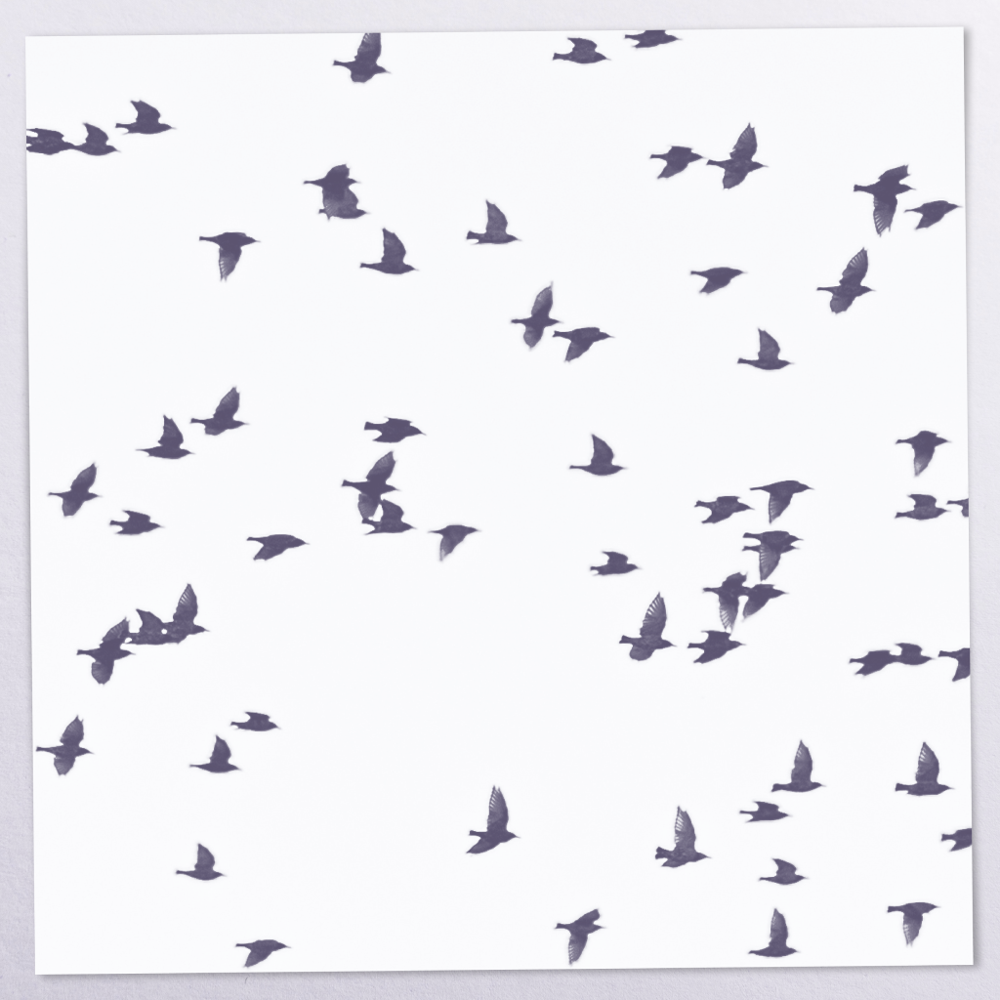

Moving is about subtle, sometimes barely there melodies. When a melody is more of an idea and takes shape in your mind.
While the original version of Moving came out in 2024, the album was re-released in 2025, with two additional tracks and reworked cover art.
Listen on:
Consider buying albums – you get free, unlimited streaming, and you support the artist.